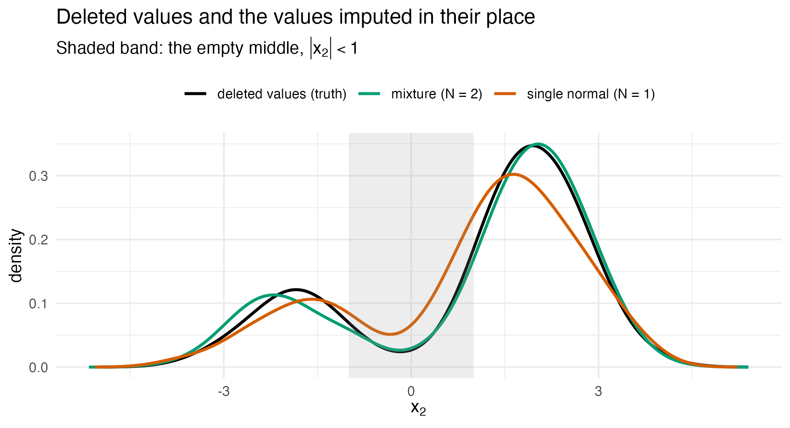

has_ggplot2 <- requireNamespace("ggplot2", quietly = TRUE)
has_mice <- requireNamespace("mice", quietly = TRUE)The problem
Datasets often have holes. A measurement was not taken, a questionnaire came back half empty, or a sample was lost. Most analyses need complete rows, so the holes have to be filled first. Filling them with plausible values is called imputation.
Multiple imputation fills each hole several times with random values drawn from a model of the data (Rubin, 1987). The result is several completed datasets. The analysis runs on each of them, and the results are combined, or pooled, into one estimate. The interval around that estimate then includes the uncertainty about the missing values.
Imputed values come from a model, and a wrong model gives wrong values. Many imputation models assume that the data form one cloud shaped like a normal distribution. Real data often fall into groups instead, such as species, sites or types of patient, with few values in between. A model that ignores the groups imputes values in the gap between them. This biases estimates from the completed data.
This vignette imputes data that form two groups and checks the
imputed values against the true values that were deleted. It then
compares proxymix with two established imputation packages,
mice and Amelia.
Package capabilities
-
gmm_impute()fits a Gaussian mixture, a sum of a few normal distributions, to a data matrix with holes. It returnsmcompleted datasets. The argumentNsets the number of components. IfNis left out, the Bayesian information criterion (BIC) chooses it. -
gmm_complete()extracts one completed dataset. -
proxy_pool()pools the mean of a column across the completed datasets. -
proxy_fmi()reports the fraction of missing information: the share of the information about the mean that the holes removed. -
as_mids()converts the completed datasets into the format of themicepackage.mice::pool()can then pool any other estimate, such as a regression slope.
Each missing value is drawn from its conditional distribution, which is the distribution of the missing entry given the observed entries in the same row. When the data are modelled by a Gaussian mixture, this conditional distribution is again a Gaussian mixture (van der Hoek and Elliott, 2024). It has an exact formula, so no simulation is needed. A mixture can have several peaks and a different spread in each group. A single normal distribution cannot.
For a column mean, proxy_pool() computes the uncertainty
due to the imputed values exactly from the fitted mixture, instead of
estimating it from the spread of the completed datasets. That part of
the standard error therefore has no added noise from the random draws of
the imputed values.
Addressing the problem
Data with two groups and known missing values
The data are simulated, so the deleted values are kept and every
imputation can be checked against them. There are 600 rows in two groups
of about equal size. Within each group, x1 and
x2 rise together. About half of the x2 values
are then deleted. The chance of deletion rises with the observed
x1 and does not depend on the deleted x2
itself. This setting is called missing at random.
set.seed(20260620)
n <- 600L
lab <- sample(c(-1, 1), n, replace = TRUE)
x1 <- 2 * lab + rnorm(n, 0, 0.6)
x2 <- 2 * lab + 0.5 * (x1 - 2 * lab) + rnorm(n, 0, 0.6)
truth <- cbind(x1 = x1, x2 = x2)
x_holes <- truth
missing <- runif(n) < plogis(0.6 * x1)
x_holes[missing, "x2"] <- NA
frac_missing <- mean(missing)The values of x2 cluster near
and near
,
with few values in between. The band
marks this empty middle. The function in_gap() returns the
share of values that fall in the band.
Impute with a mixture and with a single normal distribution
The first imputation uses a mixture of two normal distributions and makes 20 completed datasets.
imp <- gmm_impute(x_holes, N = 2L, m = 20L, seed = 1L)
imp
#> <gmm_imputation>: m = 20 completions, K = 2 components, p = 2
#> mechanism : missing at random
#> missing : x1 0%, x2 53%A completed dataset has no holes left.
done <- gmm_complete(imp, 1L)
anyNA(done)
#> [1] FALSEWith N = 1L, the mixture has one component, so the
imputation model is a single multivariate normal distribution. Many
standard imputation methods make this assumption. It is the point of
comparison in this section.
imp1 <- gmm_impute(x_holes, N = 1L, m = 20L, seed = 1L)
done1 <- gmm_complete(imp1, 1L)| Values | Share with |
|---|---|
| deleted values (truth) | 0.069 |
| mixture imputation (N = 2) | 0.084 |
| single-normal imputation (N = 1) | 0.184 |
Where the imputed values fall
dens_df <- function(v, label) {
d <- density(v)
data.frame(x2 = d$x, density = d$y, source = label,
stringsAsFactors = FALSE)
}
plot_df <- rbind(
dens_df(truth[missing, "x2"], "deleted values (truth)"),
dens_df(done[missing, "x2"], "mixture (N = 2)"),
dens_df(done1[missing, "x2"], "single normal (N = 1)")
)
plot_df$source <- factor(
plot_df$source,
levels = c("deleted values (truth)", "mixture (N = 2)",
"single normal (N = 1)")
)
ggplot2::ggplot(plot_df, ggplot2::aes(x2, density, colour = source)) +
ggplot2::geom_line(linewidth = 0.9) +
ggplot2::annotate("rect", xmin = -1, xmax = 1, ymin = -Inf, ymax = Inf,
fill = "grey60", alpha = 0.18) +
ggplot2::scale_colour_manual(
name = NULL,
values = c("deleted values (truth)" = "#000000",
"mixture (N = 2)" = "#009E73",
"single normal (N = 1)" = "#D55E00")
) +
ggplot2::labs(
x = expression(x[2]), y = "density",
title = "Deleted values and the values imputed in their place",
subtitle = expression("Shaded band: the empty middle, " *
group("|", x[2], "|") < 1)
) +
ggplot2::theme_minimal(base_size = 11) +
ggplot2::theme(legend.position = "top")
Density of the deleted values of and of the values each imputation put in their place, from the first completed dataset of each. The shaded band is the empty middle, .
Pool the mean of x2
proxy_pool() combines the 20 estimates of the mean of
x2 into one estimate with a standard error (SE) and a 95%
confidence interval (CI).
pooled <- proxy_pool(imp, "x2")
pooled1 <- proxy_pool(imp1, "x2")
fmi_mix <- proxy_fmi(imp, "x2")
mean_truth <- mean(truth[, "x2"])
err_mix <- abs(pooled$estimate - mean_truth)
err_one <- abs(pooled1$estimate - mean_truth)| Data used | Mean of | SE | CI lower | CI upper | Distance from complete data |
|---|---|---|---|---|---|
| complete data, before deletion | 0.0423 | 0.0000 | |||
| rows not deleted | -1.0809 | 1.1232 | |||
| mixture imputation (N = 2) | 0.0431 | 0.0913 | -0.1358 | 0.2221 | 0.0008 |
| single-normal imputation (N = 1) | 0.0200 | 0.0937 | -0.1638 | 0.2039 | 0.0223 |
Pool a regression slope with mice
For estimates other than a column mean, as_mids()
converts the completed datasets into a mice object. The
regression of x2 on x1 is then fitted in each
completed dataset, and mice::pool() combines the results by
Rubin’s rules. These rules average the estimates and add their spread
across the completed datasets to the average variance.
| term | estimate | std.error | statistic | df | p.value |
|---|---|---|---|---|---|
| (Intercept) | -0.037 | 0.039 | -0.942 | 67.970 | 0.350 |
| x1 | 0.942 | 0.019 | 49.020 | 57.095 | < 0.001 |
Comparison with mice and Amelia
So far the mixture has been compared only with a single normal
distribution, on one dataset. In a simulation, proxymix was compared
with two established imputation packages. mice (van Buuren
and Groothuis-Oudshoorn, 2011) ran with its default method for numeric
columns, predictive mean matching, which fills each hole with an
observed value from a row whose prediction is similar.
Amelia (Honaker, King and Blackwell, 2011) draws the
missing values from a single multivariate normal distribution fitted to
bootstrap resamples of the data. Each package imputed 500 datasets of
500 rows from each of two designs: one normal cloud, and two groups with
different correlations. For each simulated dataset, the slope of
on
was estimated in every completed dataset and pooled by Rubin’s rules.
The coverage is the share of simulated datasets whose 95% interval
contained the true slope. It should be close to 0.95.
| Data used | Coverage, one cloud | Coverage, two groups | Error, two groups | Interval width, two groups |
|---|---|---|---|---|
| complete data, before deletion | 0.948 | 0.964 | 0.030 | 0.127 |
| proxymix | 0.928 | 0.940 | 0.057 | 0.223 |
| mice | 0.766 | 0.828 | 0.055 | 0.150 |
| Amelia | 0.926 | 0.452 | 0.136 | 0.231 |
With two groups, the proxymix intervals contained the true slope in
0.940 of datasets, against 0.828 for mice and 0.452 for
Amelia. Amelia fits one normal distribution to
both groups, and on average its slope estimates were 0.124 above the
true value of 0.854. The mice estimates were about as
accurate as those of proxymix, but the mice intervals were
narrower and missed the true slope more often. With one normal cloud,
proxymix and Amelia did equally well, with coverages of
0.928 and 0.926, while mice reached only 0.766.
proxymix is the slowest of the three. Twenty completions of one
two-group dataset took 1.47 seconds with proxymix, 0.08 with
mice and 0.04 with Amelia (median of five runs
on one computer).
The code below imputes one dataset from the two-group design with all
three packages and pools the slope with mice::pool() for
each. It repeats the simulation code for a single dataset. It needs
mice and Amelia, both on CRAN, and it is not
run when this vignette is built.
library(proxymix)
library(mice)
library(Amelia)
# one dataset of 500 rows with two groups
set.seed(1L)
n <- 500L
grp <- runif(n) < 0.5
rho <- ifelse(grp, -0.3, 0.6)
z1 <- rnorm(n)
full <- data.frame(
x1 = ifelse(grp, 1.5, -1.5) + z1,
x2 = ifelse(grp, 2, -1.5) + rho * z1 + sqrt(1 - rho^2) * rnorm(n)
)
# delete x2 with a probability that rises with x1
obs <- full
obs$x2[runif(n) < plogis(0.4 + 0.6 * full$x1)] <- NA
# 20 completed datasets from each package
sets <- list(
proxymix = complete(as_mids(gmm_impute(obs, m = 20L, seed = 1L)), "all"),
mice = complete(mice(obs, m = 20L, seed = 1L, printFlag = FALSE), "all"),
Amelia = amelia(obs, m = 20L, p2s = 0L)$imputations
)
# the same regression in every completed dataset, pooled by mice::pool()
lapply(sets, function(s) {
fits <- lapply(s, function(d) lm(x2 ~ x1, data = d))
summary(pool(fits), conf.int = TRUE)
})The extended version of this article gives the full simulation, its results for the mean as well as the slope, and an example on the Palmer penguins data.
Interpretation
The table of shares in the empty middle uses the first completed dataset of each imputation. Averaged over all 20 completed datasets, the mixture put 6.0 per cent of its imputed values in the middle, and the single normal distribution put 15.8 per cent there. The single normal distribution put about 2.3 times as much in the middle as the data had.
Both imputations in the figure have two peaks. Each imputed value is
drawn given the observed x1 of its row, and x1
itself falls into two groups. The imputations differ in the line along
which each imputation model draws x2 from x1,
and in the spread of the draws around that line. The single-normal model
draws from one line for both groups, with a slope of 0.94 and a standard
deviation around the line of 0.70. The mixture model draws from one line
per group, with slopes of 0.37 and 0.43 and standard deviations of 0.60
and 0.62. In the complete data, the slope within each group is 0.43 and
the standard deviation around the line is 0.63. The single-normal
imputations are therefore too wide, and their inner edges reach into the
middle.
These lines belong to the imputation models, not to the regression
that the analyst fits afterwards. The regression of x2 on
x1 in the table above ignores the groups. Its pooled slope
is therefore about 0.94 for both imputations, as it is in the complete
data.
The mean of x2 in the complete data is 0.042. The mean
of the rows that were not deleted is -1.081. The two differ because rows
with a large x1, and therefore a large x2,
were more likely to be deleted. The pooled means of the mixture and
single-normal imputations differ from the complete-data mean by 0.0008
and 0.0223. Both differences are much smaller than the standard errors
of about 0.09, so this dataset does not show which imputation gives the
better mean. The single normal distribution distorts the shape of the
imputed values. The figure shows this distortion. The pooled mean does
not.
The fraction of missing information for the mean is 0.097. Although
53 per cent of x2 is missing, the observed x1
carries much of the information about x2. Only about 10 per
cent of the information about the mean is lost.
Limitations
Everything above assumes numeric data that are missing at random.
Under this assumption, the chance that an entry is missing may depend on
the observed entries but not on the missing value itself. The assumption
cannot be tested from the observed data. Missingness that depends on the
missing value, and censoring at a known limit, break it. The
mechanism argument of gmm_impute() handles
censoring. It also handles missingness that depends on the missing
value, once you assume how strongly the value changes its chance of
being missing, as Missing data that depends on the missing
value shows.
The single-dataset example compares the mixture only with a single
normal distribution, on 600 rows in two variables, with the number of
components set by hand. It does not show how the method behaves on wide
data or with many incomplete columns. The simulation adds predictive
mean matching (mice) and bootstrapped multivariate normal
imputation (Amelia), with the number of components chosen
by BIC. It does not include other methods that can also represent
groups, such as imputation by classification and regression trees. It
covers two designs, one pattern of missingness and one sample size. The
imputers were not given the group of each row. With the group as a
column, mice and Amelia could model the groups
directly.
Estimates other than a column mean are pooled by mice,
which uses the large-sample rules of Rubin (1987) and inherits their
assumptions. The setting with the largest effect on the result is the
number of components. With N = 1, the imputation model is a
single multivariate normal distribution. With far more components than
there are real groups, the mixture fits noise into the conditional
distribution.
Further reading
Missing data that depends on the missing value covers censoring at a known limit and missingness whose chance depends on the missing value. It shows how to vary the assumed strength of the link between a value and its chance of being missing. The observed data inform that strength only through the assumed shape of the distribution.
The closed-form operator calculus on a mixture explains the
formulas behind gmm_conditionalise() and the other exact
operations on a mixture.
One mixture, many methods places imputation beside other classical analyses that use a single fitted mixture.
References
Honaker, J., King, G. and Blackwell, M. (2011). Amelia II: A program for missing data. Journal of Statistical Software 45(7), 1–47. https://doi.org/10.18637/jss.v045.i07.
Hoek, J. van der and Elliott, R. J. (2024). Mixtures of multivariate Gaussians. Stochastic Analysis and Applications. https://doi.org/10.1080/07362994.2024.2372605.
Rubin, D. B. (1987). Multiple Imputation for Nonresponse in Surveys. Wiley.
van Buuren, S. and Groothuis-Oudshoorn, K. (2011). mice: Multivariate imputation by chained equations in R. Journal of Statistical Software 45(3), 1–67. https://doi.org/10.18637/jss.v045.i03.
Reproduce
The data are generated with seed 20260620, and
gmm_impute() is given seed = 1L. The completed
datasets are therefore reproducible, and the seed does not change the
random-number state outside the call. The comparison with
mice and Amelia is read from stored results of
a simulation run under proxymix 0.16.0, mice 3.19.0 and
Amelia 1.8.3, which took about 27 minutes on one core.
#> R version 4.6.1 (2026-06-24)
#> Platform: aarch64-apple-darwin23
#> Running under: macOS Tahoe 26.6.2
#>
#> Matrix products: default
#> BLAS: /Library/Frameworks/R.framework/Versions/4.6/Resources/lib/libRblas.0.dylib
#> LAPACK: /Library/Frameworks/R.framework/Versions/4.6/Resources/lib/libRlapack.dylib; LAPACK version 3.12.1
#>
#> locale:
#> [1] en_AU.UTF-8/en_AU.UTF-8/en_AU.UTF-8/C/en_AU.UTF-8/en_AU.UTF-8
#>
#> time zone: Australia/Adelaide
#> tzcode source: internal
#>
#> attached base packages:
#> [1] stats graphics grDevices utils datasets methods base
#>
#> other attached packages:
#> [1] proxymix_0.16.0
#>
#> loaded via a namespace (and not attached):
#> [1] gtable_0.3.6 shape_1.4.6.1 xfun_0.60 bslib_0.12.0
#> [5] ggplot2_4.0.3 htmlwidgets_1.6.4 lattice_0.23-1 vctrs_0.7.3
#> [9] tools_4.6.1 Rdpack_2.6.6 generics_0.1.4 stats4_4.6.1
#> [13] tibble_3.3.1 pan_2.0 pkgconfig_2.0.3 jomo_2.7-6
#> [17] Matrix_1.7-6 RColorBrewer_1.1-3 S7_0.2.2 desc_1.4.3
#> [21] lifecycle_1.0.5 compiler_4.6.1 farver_2.1.2 textshaping_1.0.5
#> [25] codetools_0.2-20 htmltools_0.5.9 sass_0.4.10 yaml_2.3.12
#> [29] glmnet_5.0 mice_3.19.0 pillar_1.11.1 pkgdown_2.2.1
#> [33] nloptr_2.2.1 jquerylib_0.1.4 tidyr_1.3.2 MASS_7.3-66
#> [37] cachem_1.1.0 reformulas_0.4.4 iterators_1.0.14 rpart_4.1.27
#> [41] boot_1.3-32 foreach_1.5.2 mitml_0.4-5 nlme_3.1-171
#> [45] tidyselect_1.2.1 digest_0.6.39 dplyr_1.2.1 purrr_1.2.2
#> [49] labeling_0.4.3 splines_4.6.1 fastmap_1.2.0 grid_4.6.1
#> [53] cli_3.6.6 magrittr_2.0.5 dichromat_2.0-1 survival_3.8-11
#> [57] broom_1.0.13 withr_3.0.3 scales_1.4.0 backports_1.5.1
#> [61] rmarkdown_2.32 otel_0.2.0 nnet_7.3-21 lme4_2.0-6
#> [65] ragg_1.5.2 evaluate_1.0.5 knitr_1.51 rbibutils_2.4.1
#> [69] rlang_1.3.0 Rcpp_1.1.2 glue_1.8.1 minqa_1.2.8
#> [73] jsonlite_2.0.0 R6_2.6.1 systemfonts_1.3.2 fs_2.1.0